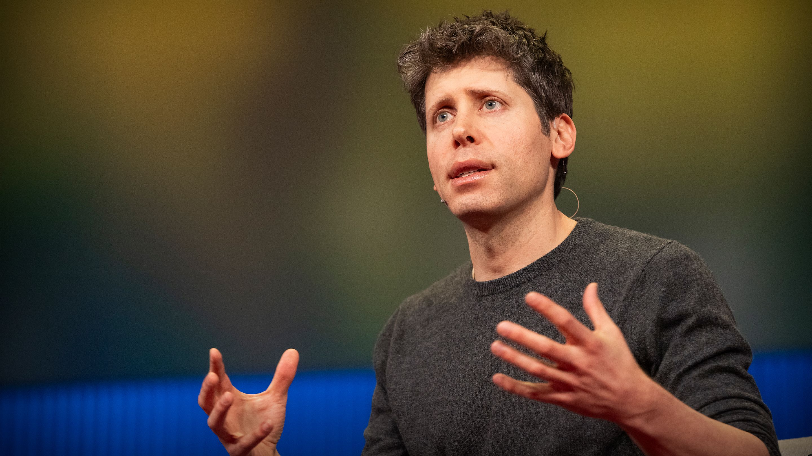

Sam Altman Identity, current role and primary company verified from official sources.
CEO of OpenAI•OOpenAI
Sam Altman is the CEO of OpenAI and one of the most visible founders shaping the global artificial intelligence industry.

Sam Altman founder facts
Key founder, role and company information curated from official sources and reliable public references.
Founder Overview
A concise summary of Sam Altman's journey, influence and current focus.
Sam Altman is an American technology founder, investor, and the CEO of OpenAI, one of the world's most influential artificial intelligence companies. He is widely known for leading OpenAI during the global rise of ChatGPT and modern generative AI. OpenAI officially confirmed his return as CEO in November 2023.
Before OpenAI became a major name in AI, Altman built his early founder career through Loopt, a location-based social app. He later became closely associated with Y Combinator, where his public profile grew across startups, investing and technology leadership.
Today, Altman's work sits at the center of a larger global discussion: how artificial intelligence can create major business value, while also raising serious questions around safety, governance and long-term social impact.
"AI will probably, most likely, lead to the end of the world, but in the meantime, there'll be great companies."
Why He's Known For
Sam Altman is known for leading OpenAI, helping bring ChatGPT into global public use, and becoming one of the most visible voices in artificial intelligence and startup culture.
The Problem He Works On
His work focuses on building advanced AI systems while dealing with the hard questions around safety, usefulness, business adoption and responsible AI development.
His Current Focus
Sam Altman is currently focused on OpenAI's growth, AI product development, research direction, and the wider challenge of building powerful AI systems with public trust.
Key Achievements
Milestones that highlight Sam Altman's founder journey, AI leadership and public impact.
Led OpenAI as CEO
Returned as CEO of OpenAI after the company announced a new initial board and confirmed his leadership role.
Brought ChatGPT Into Global Attention
Led OpenAI during the public rise of ChatGPT, one of the most visible AI products of the modern generative AI wave.
Recognized Among Influential AI Leaders
Included in TIME's 2023 TIME100 AI list as CEO of OpenAI, reflecting his public influence in artificial intelligence.
Became President of Y Combinator
Became president of Y Combinator, one of Silicon Valley's best-known startup accelerators.
Founded Loopt
Started his founder journey with Loopt, a location-based social app later acquired by Green Dot.
Biography
The story of Sam Altman's founder journey, startup background and path into artificial intelligence leadership.
"AI won't replace humans. But humans who use AI will replace those who don't."
What Shaped Him
- Early exposure to computers, software and startup culture
- Founder experience through Loopt and Silicon Valley startups
- Years of working with founders, investors and technology companies
Early Life & Formative Background
Sam Altman was born in Chicago and grew up in St. Louis, Missouri. His early interest in technology and software helped shape his path into startups.
Building the Foundation
Altman attended Stanford University before leaving to work on his first startup. That early move placed him directly inside the founder world at a young age.
First Steps in the Industry
His early founder chapter began with Loopt, a location-based social app that later became part of Green Dot through acquisition.
SourceY Combinator Chapter
Altman later became president of Y Combinator, one of Silicon Valley's best-known startup accelerators, where he worked closely with founders and early-stage companies.
SourceOpenAI Chapter
Altman became one of the most visible public leaders in artificial intelligence through OpenAI, especially during the global rise of ChatGPT.
Returned as CEO of OpenAI
OpenAI officially announced Sam Altman's return as CEO in November 2023, confirming his current leadership role after a major company shakeup.
SourceAI, Products & Public Debate
Today, Altman's public biography is tied to OpenAI's growth, AI product development, startup culture and the wider debate around AI safety and governance.
Want to explore more?
Discover detailed milestones, achievements and public impact in Sam Altman's journey.
Companies Founded
The companies Sam Altman founded or helped start, with role, founding year, industry, current status and source confidence.
Career Timeline
A timeline of Sam Altman's founder journey, startup leadership and OpenAI milestones.
OpenAI Board Confirms Altman's Leadership
OpenAI announced the completion of its board review and stated full confidence in Sam Altman and Greg Brockman's ongoing leadership.
Returned as CEO of OpenAI
OpenAI officially announced Sam Altman's return as CEO after a major leadership shakeup and a new initial board.
OpenAI Introduced ChatGPT
OpenAI introduced ChatGPT publicly, marking one of the most visible AI product launches connected to Altman's leadership era.
Co-chair at OpenAI's Launch
OpenAI's launch announcement named Sam Altman as one of the organization's co-chairs and early supporters.
Became President of Y Combinator
Y Combinator announced Sam Altman as president, placing him in a major leadership role across early-stage startups.
Founded Loopt
Sam Altman's early founder path began with Loopt, a location-based social app from Y Combinator's Summer 2005 batch.
Products & Innovations
Key products and AI innovations connected to Sam Altman's founder and leadership journey.
Investments & Advisory Roles
Companies, funds and organizations where Sam Altman has invested, advised, served on a board or held a public investment-related role.
Major personal backer; chaired the board for years and stepped down in 2026.
Early investor and chairman; helped guide the advanced nuclear company toward public-market listing.
Funded the company's early longevity research push.
Served on Reddit's board and supported the company during a major growth period.
Early personal investor; Altman has described Stripe as one of his strongest investment returns.
Venture fund connected to Altman's startup investing activity after Loopt.
Led YC and worked with startup founders across batches, funding and company-building.
Expertise & Industries
Core areas where Sam Altman has built, led, invested or played a public role across technology, startups, AI and energy.
Education & Qualifications
A concise look at Sam Altman's academic background and early technical foundation.
Sam Altman does not appear to hold a completed university degree. His public education record is mainly tied to Stanford computer science study and his early move into startup building through Loopt.
Awards & Recognition
Public recognitions connected to Sam Altman's role in artificial intelligence, startups and technology leadership.
Media, Interviews & Public Appearances
Selected public conversations, hearings and interviews where Sam Altman discussed AI, OpenAI, policy and technology.
Business Impact
A focused view of Sam Altman's broader impact across AI adoption, startups, developer tools, policy and long-term technology bets.
Network & Related People
Key public figures connected to Sam Altman through OpenAI, Y Combinator and startup leadership.
Co-founded OpenAI and remains one of the most publicly connected executive figures in Altman's OpenAI leadership circle.
Active OpenAI leadership figure View Full ProfileYC co-founder who publicly announced Sam Altman as Y Combinator president in 2014 and described him as the right person to lead YC's next stage.
Former direct YC leadership connection View Full ProfileOpenAI board chair connected to Altman's return as CEO and later governance updates at OpenAI.
Active OpenAI board figure View Full ProfileOpenAI co-founder and former chief scientist, central to the company's early research identity.
View Full ProfileListed among OpenAI's early backers and co-founders; later left OpenAI's board.
View Full ProfileOpenAI board member publicly connected to major governance events around Altman's role.
View Full ProfileNamed to OpenAI's initial board during Altman's 2023 return as CEO.
View Full ProfileFormer OpenAI board member and investor connected to Altman's wider Silicon Valley network.
View Full ProfileGallery & Videos
Selected public photos and videos from Sam Altman's talks, hearings, events and public appearances.
Altman speaking during OpenAI's first developer conference in San Francisco.
View MediaAltman testifying before the U.S. Senate on AI rules, safety and oversight.
Watch VideoPublicly available image from a fireside chat during his Y Combinator era.
View ImagePublic Features & Disclosures
Important public notes about Sam Altman's roles, governance events, company structure and source-sensitive claims.
Sam Altman is publicly listed as CEO of OpenAI and returned to the OpenAI board after the 2024 governance review.
This clarifies his current public leadership position without mixing it with founder, investor or product claims.
OpenAI's board announced in March 2024 that an independent review was completed and expressed confidence in Altman and Greg Brockman's continued leadership.
The 2023 leadership removal and return should be presented as a documented governance event, not as speculation.
OpenAI says its nonprofit controls OpenAI Group PBC under the updated structure announced in 2025.
This helps explain OpenAI's structure without overstating Altman's ownership or control.
Sam Altman should not be presented as the sole founder of OpenAI. He is one of the publicly listed early OpenAI co-founders/backers.
This avoids a common profile-page error and keeps the listing accurate.
Altman's wealth is commonly tied to outside investments and startup holdings, not direct OpenAI equity. Avoid saying he became wealthy from owning OpenAI unless a source clearly supports it.
This keeps financial claims conservative and prevents misleading wording.
Some investment amounts, advisory roles and startup stakes are not publicly disclosed. Mark undisclosed items clearly instead of estimating.
This protects the listing from invented numbers or weak claims.
Frequently Asked Questions
Quick answers about Sam Altman's roles, companies, OpenAI connection and public profile.
Sam Altman is one of OpenAI's publicly listed early co-founders/backers. He should not be described as the sole founder of OpenAI.
Sam Altman is publicly listed as CEO of OpenAI and is also on OpenAI's board.
His founder-linked companies include Loopt and OpenAI. Loopt was his early startup, while OpenAI was created with multiple co-founders and early backers.
No. He studied computer science at Stanford but left before completing a degree to work on Loopt.
Yes. Sam Altman became president of Y Combinator in 2014 and later moved away from the role as his OpenAI work became more central.
OpenAI's structure is unusual and has changed over time. Avoid saying Altman owns OpenAI unless a current official source clearly supports that claim.
He is known for OpenAI leadership, ChatGPT's public rise, startup investing, Y Combinator leadership and long-term technology bets in areas like energy and longevity.
Yes. Public records and reporting connect him to investments in companies such as Stripe, Reddit, Helion, Oklo and Retro Biosciences. Some amounts are disclosed; many are not.
Sources & References
All public sources and citations referenced throughout this profile, listed for transparency and verification.
-
1
OSam Altman Returns as CEO — OpenAI Official Update openai.com/index/sam-altman-returns-as-ceo-openai-has-a-new-initial-board
-
2
OIntroducing OpenAI — Launch Announcement openai.com/index/introducing-openai
-
3
OReview Completed — Altman & Brockman to Continue to Lead OpenAI openai.com/index/review-completed-altman-brockman-to-continue-to-lead-openai
-
4
OChatGPT — OpenAI Product Page openai.com/index/chatgpt
-
5
OGPT-4 Research — OpenAI openai.com/index/gpt-4-research
-
6
ODALL-E 3 Now Available in ChatGPT Plus and Enterprise — OpenAI openai.com/index/dall-e-3-is-now-available-in-chatgpt-plus-and-enterprise
-
7
OIntroducing Codex — OpenAI openai.com/index/introducing-codex
-
8
OOpenAI Developer Platform developers.openai.com
-
9
TTIME100 AI — TIME time.com/collections/time100-ai/6309022/sam-altman-ai-2
-
10
YSam Altman for President — Y Combinator Blog ycombinator.com/blog/sam-altman-for-president
-
11
YLoopt — Y Combinator Company Profile ycombinator.com/companies/loopt
-
12
MGreen Dot to Acquire Loopt — MarketScreener marketscreener.com/.../Green-Dot-to-Acquire-Loopt
Find More Founder Profiles
Explore source-backed profiles of founders, investors and technology leaders connected to startups, AI and global business.